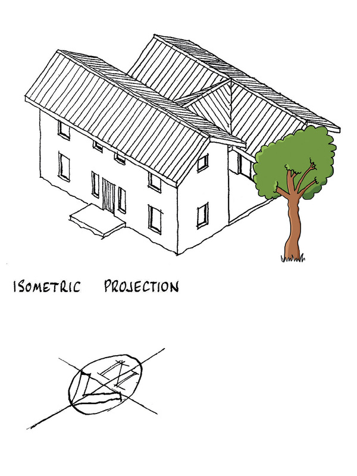
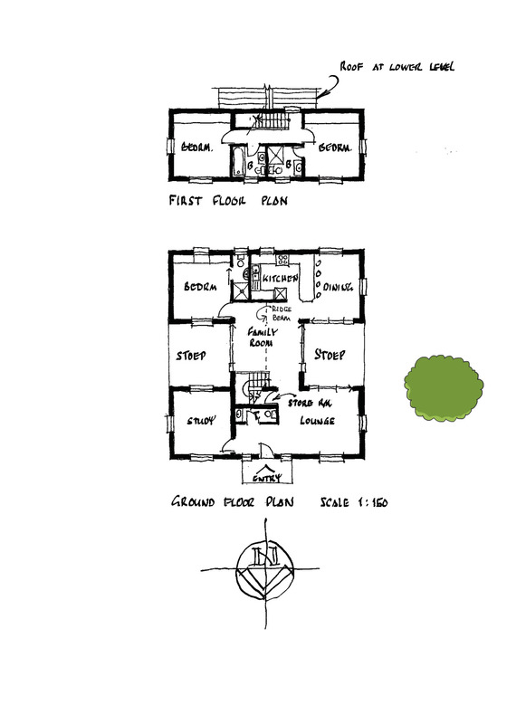
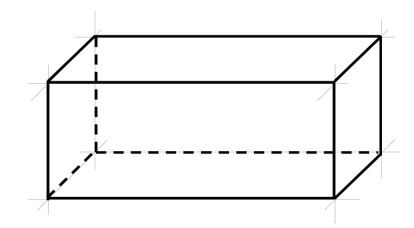
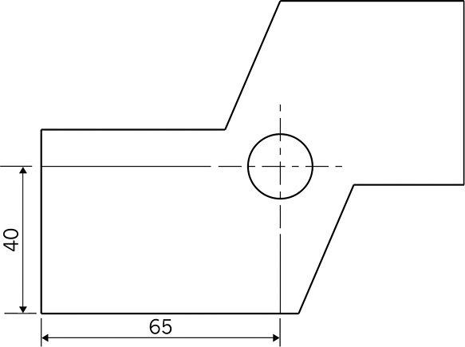
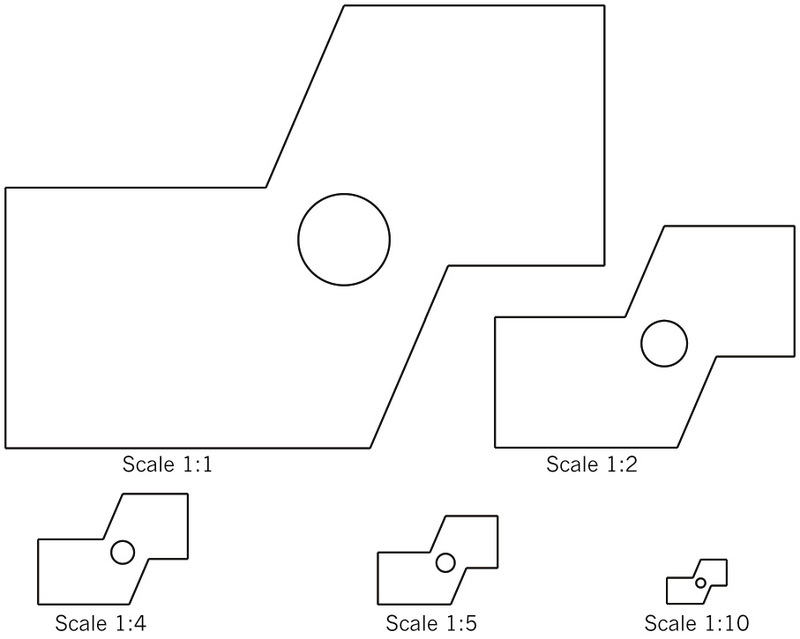
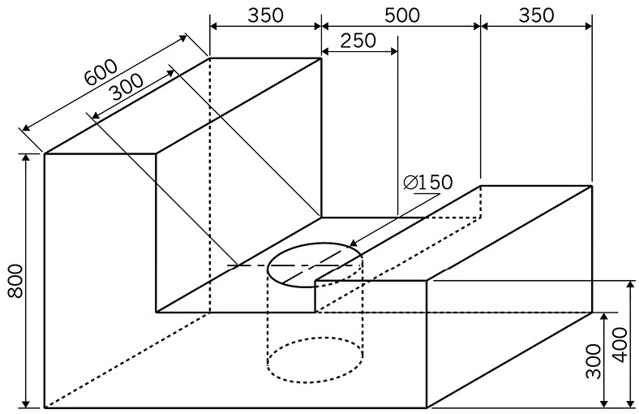
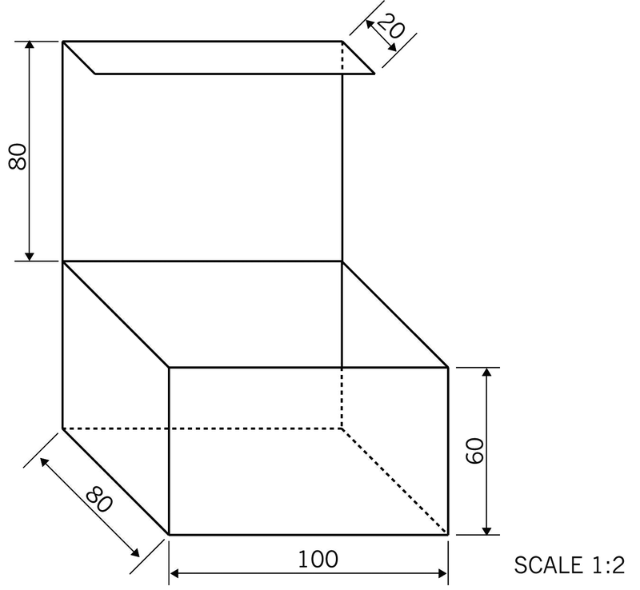
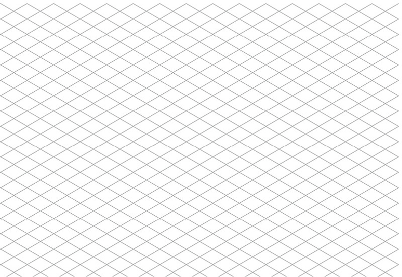

Flat and isometric working drawings
 Figure 1
Figure 1
Figure 2
Figure 3 Figure 4
Figure 4
These lines are
also referred to as solid lines. They are slightly thicker and
darker than construction lines.
 Figure 5
Figure 5
Figure 6chain dash-dot
lines.
Figure 7 Figure 8
scale
Figure 8
scale. But how does this
work?
Scale 1:1 This is
full scale and means that a centimetre in your drawing shows
a centimetre in real life.
Scale 1:2 This
means that a centimetre in your drawing shows two centimetres
in real life.

Figure 9 Figure 10
Redraw this object to a scale of 1:5. Use a ruler to make this
drawing and all the other drawings in this chapter. Use a
compass to draw the circle.
Figure 10
Redraw this object to a scale of 1:5. Use a ruler to make this
drawing and all the other drawings in this chapter. Use a
compass to draw the circle.
-
Show
dimensions.
-
Show the
centre lines of the circle.
-
Show the
scale.
 The lady only sees the red part of the block. Make a sketch of
the red part on the grid below.
The lady only sees the red part of the block. Make a sketch of
the red part on the grid below. Figure 11
Figure 11
 Make a 1:10 scale
drawing of the front part of this object.
Show
hidden lines.
Show
dimensions.
Show the
scale.
Make a 1:10 scale
drawing of the front part of this object.
Show
hidden lines.
Show
dimensions.
Show the
scale.

Figure 12

 Figure 13: Oblique view
Figure 13: Oblique view Figure 14: Isometric drawing
Figure 14: Isometric drawing
The word "isometric" comes
from the words "iso" and "metric".
"Iso" means "the same", and
"metric" means "measurement".
Make
an isometric drawing of the chalk box on the right on the
isometric grid. Use a scale of 1:2. -
Show
hidden lines.
-
Show
dimensions.
-
Show the
scale.

Figure 15
Make an isometric
drawing of the piano on the right on the isometric grid. Use
a scale of 1:25.
-
Show
hidden lines.
-
Show
dimensions.
-
Show the
scale.
 Figure 16
Figure 16